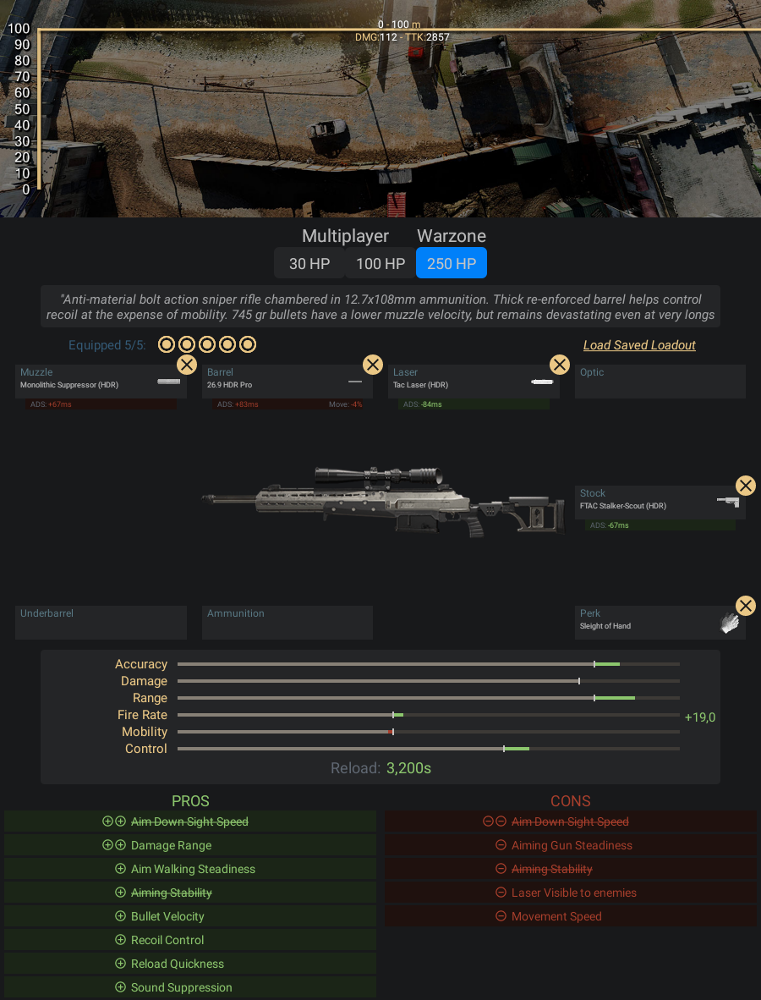

Fuzil de precisão antimaterial calibre 12,7x108mm e com ação por ferrolho. Os
projéteis de 745g têm menor velocidade de bocal, mas são devastadores a longa
distância.
- Pontos Positivos:
- -A HDR é a sniper mais fácil de calcular a trajetória da bala para
- longas distâncias
- Pontos Negativos:
- -Mira um pouco mais devagar que as outras na lista
Informações e dicas de como fazer uma classe da HDR:
Acessórios para HDR:
- Boca - Surpressor Monolítico
- Cano - HDR 26.9 profissional
- Laser - Laser Tático
- Coronha - Batedor-Perseguidor FTAC
- Vantagem - Mãos Leves